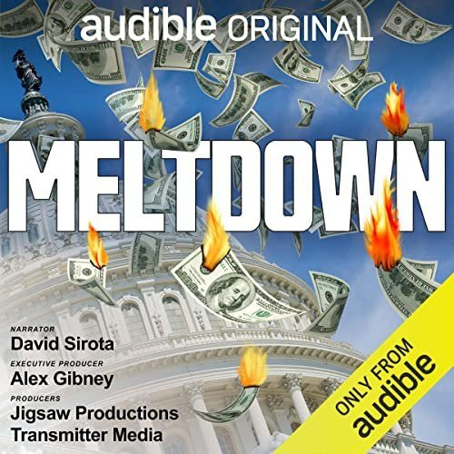

Why the Real Estate Market Will Definitely Collapse
America is on the precipice of an economic meltdown which is going to start with a collapse of the housing market. If we're lucky it will remain in that one sector. If we're even luckier that collapse will in reality be just a slow decline over a few years. If we're unlucky we will repeat the steep declines we saw in 2007, but lack the financial tools to dig ourselves out. I know that it's generally a bad idea for a journalist to make predictions. After all the future is, by definition, uncertain. But I feel that holding my tongue would be complacency.
There is one key indicator in the real estate market that is so grim that I don't see any way that we're getting out of this unscathed. I'm talking about the ratio between the median American income ($75,000) and monthly payment on new mortgages, which now stands at a mind-boggling 41%. The last time we saw numbers like this was in the stagflation crisis of 1982. And before that was the Great Depression.
In this week's video I explore how that number has changed over the last 40 years and why there is no practical way for the Federal Reserve Board to intervene and stop the coming collapse in real estate prices. This is primarily because for the last 15 years we've benefitted from historically low interest rates that have radically over-inflated the value of US housing stock. When you adjust everything for the toll of inflation, it's patently obvious that there's no way that ordinary American buyers can enter into the real estate market without sacrificing their ability to spend money on anything else.
In 1982, the Fed was able to fight stagflation by raising the benchmark rate, which caused mortgage rates to skyrocket to 18%. That was a pretty hard hit to the real estate market, but ultimately it did lead us out of the mess. But times are different now. Back in '82 then the median home price was $65,000 ($195,000 in 2022 dollars after adjusting for inflation), which meant at least some people could afford to keep up with their home payments.
Unfortunately, in 2022 the median home price in the USA is $428,000 which is more than twice what it was in 1982. The Fed doesn't have the same leeway it did in 1982 to fix the inflation situation without destroying the real estate market. In other words the Fed can either protect the current bubble prices (by keeping rates at historical lows) or save the economy in general. Either way we're headed for some serious pain.
I dive into these details a lot more in this week's video. Suffice it to say, don't buy a house right now. It's a really really bad idea. . .
...which is why you should listen to . . .

If you want to know how we really got into this mess, you should check out David Sirota and Alex Gibney's amazing podcast Meltdown. It's all about the roots of the 2007 financial crisis and how the Bush and Obama administrations botched their chance to regulate the big banks that now own our American soul. Because of them (and then four years of Trump's frankly-insane stewardship) it all but inevitable that we would run headlong into another financial crisis--the one that I'm predicting is coming in very short order.
Sirota is another Denver-based journalist and was one of the screenwriters for the movie Don't Look Up. You should definitely check out everything he does, including his political news website The Lever.